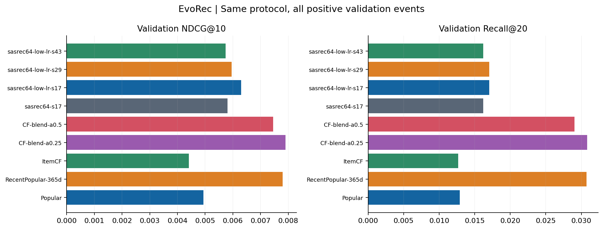
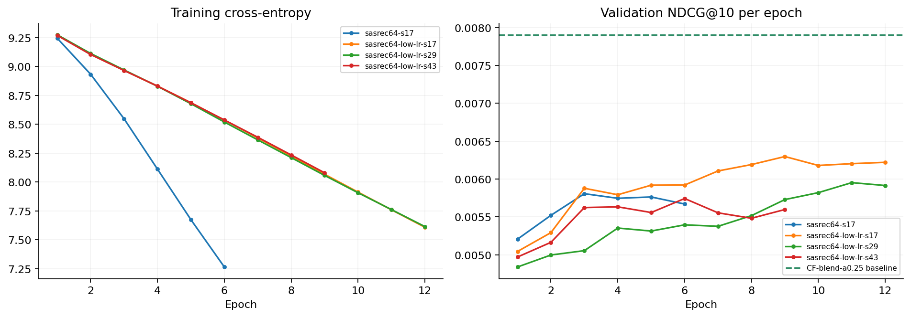
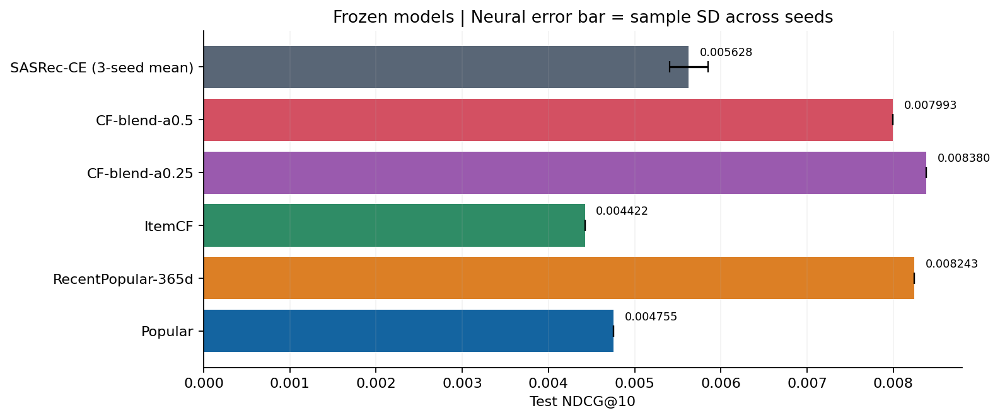

更新：2026-09-15T07:51:46.275612+00:00｜状态：本轮训练已完成｜协议：47e66889b76aaf36
本页在每轮训练结束后自动更新；打开 HTML 后每 30 秒刷新。训练结束后保留最后结果，不会自动启动下一轮。
仅比较相同样本、时间边界和评价口径；R01 前缀样本结果单独归档。
训练设备：NVIDIA GeForce RTX 4060 Laptop GPU；训练样本 54,060，验证事件 11,613。模型选型和早停只读取验证集。
按预先指定的验证 NDCG@10 比较，当前首选方法为 CF-blend-a0.25；其测试 NDCG@10 为 0.008380。
相对同协议 Popular，首选方法的测试 NDCG@10 高 76.2%；序列模型三种子均值高 18.4%。这是该样本的相对差值，尚未做统计显著性检验。
序列模型仍未超过首选基线。训练损失持续下降时，验证效果已出现停滞或退化，因此保留验证最佳检查点。
测试集 12,614 个正反馈事件中，6,874 个目标属于训练交互未覆盖但当时可用的商品，所有当前方法在该组的 Recall@20 都为 0。下一轮需验证内容候选路径。
| 方法 | N | NDCG@10 | Recall@20 | 候选 Recall@200 |
|---|---|---|---|---|
| Popular | 11613 | 0.004933 | 0.012917 | 0.080169 |
| RecentPopular-365d | 11613 | 0.007800 | 0.030741 | 0.144924 |
| ItemCF | 11613 | 0.004407 | 0.012658 | 0.079652 |
| CF-blend-a0.25 | 11613 | 0.007905 | 0.030828 | 0.146732 |
| CF-blend-a0.5 | 11613 | 0.007451 | 0.029019 | 0.146646 |
| sasrec64-s17 | 11613 | 0.005807 | 0.016189 | 0.089038 |
| sasrec64-low-lr-s17 | 11613 | 0.006298 | 0.017050 | 0.089210 |
| sasrec64-low-lr-s29 | 11613 | 0.005953 | 0.017050 | 0.088263 |
| sasrec64-low-lr-s43 | 11613 | 0.005743 | 0.016189 | 0.090416 |

实线为各训练的逐轮指标；虚线为最佳验证基线。训练损失下降不等于效果提高。

| 方法 | N | NDCG@10 | Recall@20 | 候选 Recall@200 |
|---|---|---|---|---|
| Popular | 12614 | 0.004755 | 0.011654 | 0.064452 |
| RecentPopular-365d | 12614 | 0.008243 | 0.029808 | 0.104249 |
| ItemCF | 12614 | 0.004422 | 0.011257 | 0.063977 |
| CF-blend-a0.25 | 12614 | 0.008380 | 0.030046 | 0.105201 |
| CF-blend-a0.5 | 12614 | 0.007993 | 0.029015 | 0.105518 |
| sasrec64-low-lr-s17 | 12614 | 0.005880 | 0.015776 | 0.070477 |
| sasrec64-low-lr-s29 | 12614 | 0.005544 | 0.014983 | 0.069209 |
| sasrec64-low-lr-s43 | 12614 | 0.005460 | 0.015221 | 0.070398 |

| 指标 | 均值 | 样本标准差 |
|---|---|---|
| ndcg@10 | 0.005628 | 0.000222 |
| recall@20 | 0.015327 | 0.000407 |
| candidate_recall@200 | 0.070028 | 0.000711 |
种子 17、29、43；均值不是集成模型效果，标准差不是置信区间。